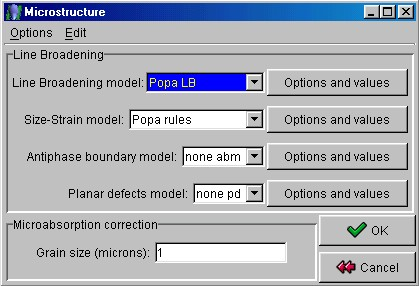

Building the analysis file (step 3)
- Choose the "Phases" tabPanel.
- If present, remove any phase.
- Press the 'Add from database' button to add a new phase. Select the database file
"structures.mdb" from the "files" folders of MAUD. Choose the
"corundum" (Al2O3) phase in the listbox. Repeat the procedure to add the phase
"T-PSZ" from the same database. It is the tetragonal zirconia.
- Select the "corundum" phase and then click on the 'Edit' button.
- Click on the 'Microstructure' button. A new panel will appear showing up different
options to correct the line broadening. Choose the "Popa LB" model as line
broadening model. Choose the "Popa rules" model as size-strain model. This
settings are due to the slightly anisotropic peak broadening of corundum. So, we will use
the Popa anisotropic model for crystallites and microstrains instead of the default
isotropic model.

Microstructure panel
Exit the window with the 'OK' button.